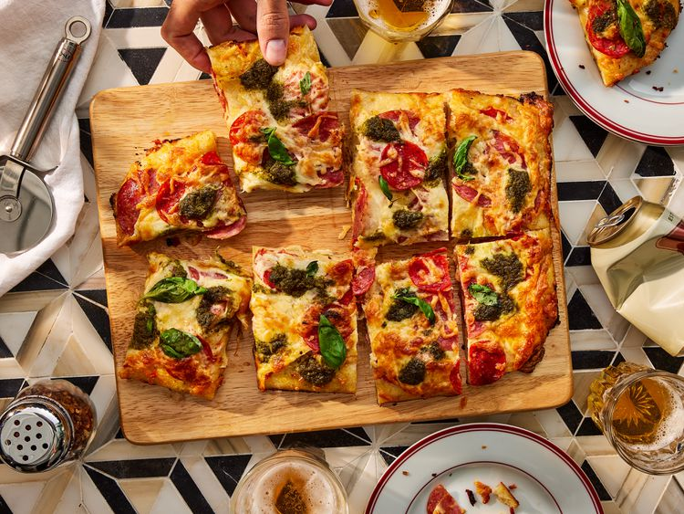

Pan Pizza
Description
First let's talk about what a "pan pizza" is, anyway. This easy-to-make style is simply a pizza cooked in a baking pan or cast iron skillet, resulting in a thicker, more bready crust. They are especially popular to whip up at home because you don't need any special pizza stones or ovens to get perfectly cheesy results.
Pan pizzas are also known for having a substantial amount of toppings. You might envision a fully loaded "Detroit-style" with its square shape and thick, crispy crust. Or a Chicago deep dish. Pan pizzas can vary in style and toppings depending on preferences.
This particular take on a pan pizza features garlic and hot pepper spreads in place of tomato sauce, which the recipe developer says "adds such a nice, slightly pungent garlicky flavor, followed by a funky kick from pepper sauce." Along with the toppings, it makes for a unique twist on traditional pizza. "The garlic spread is creamy when baked and perfectly plays the sauce roll. Its sharp flavor mellows after cooking and has a savory mild-garlic taste. I love the cured meats here, adding sharp, salty bites contrasting the rich spreads and cheese," another tester added. It all comes together in a crunchy, golden crust with a doughy, yet sturdy center—packed with punch.

Ingredients
- 1 pound fresh pizza dough, thawed
- cooking spray
- 5 tablespoons Trader Joe’s Garlic Spread-Dip
- 1 tablespoon Trader Joe’s Italian Bomba Hot Pepper Sauce, or as needed
- 2 ounces sliced Calabrese salami, divided
- 1 1/2 ounces pepperoni, divided
- 6 ounces low-moisture part-skim mozzarella cheese, shredded, divided
- 3 tablespoons Trader Joe’s Pesto Genovese
- 1/4 cup loosely packed fresh basil leaves
Steps
- Gather all ingredients.
- Remove pizza dough from refrigerator 20 minutes before making pizza. Preheat the oven to 450 degrees F (230 degrees C).
- Spray a metal 9x13-inch baking pan with cooking spray. Place pizza dough in baking pan and stretch to reach corners. If dough is hard to stretch and springs back, place a clean kitchen towel over baking pan and let dough relax for 10 minutes until pliable enough to stretch.
- Spread Garlic Spread-Dip evenly over dough, edge to edge, with a spoon or small offset spatula. Dollop with Bomba Hot Pepper Sauce, and spread evenly over Garlic Spread-Dip.
- Place 1/2 of the salami and 1/2 of the pepperoni over the sauces; sprinkle with 3/4 cup mozzarella. Top with remaining salami and pepperoni. Sprinkle with remaining mozzarella cheese.
- With a small spoon, dollop pesto, about 1/2 teaspoon at a time, over pizza.
- Bake in the preheated oven until dough has puffed, is golden brown around edges and bottom, and cheese has melted, 15 to 20 minutes, rotating pan back to front halfway through.
- Using a large spatula, remove from the oven and carefully transfer to a cutting board. Sprinkle with basil leaves, slice, and serve!
Home